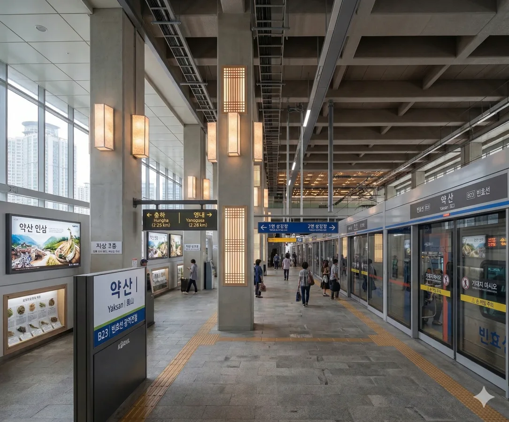
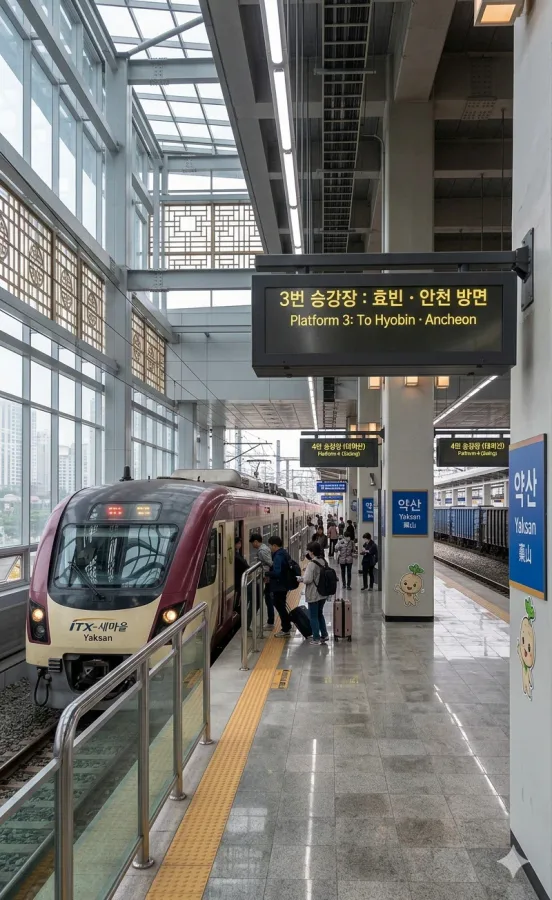
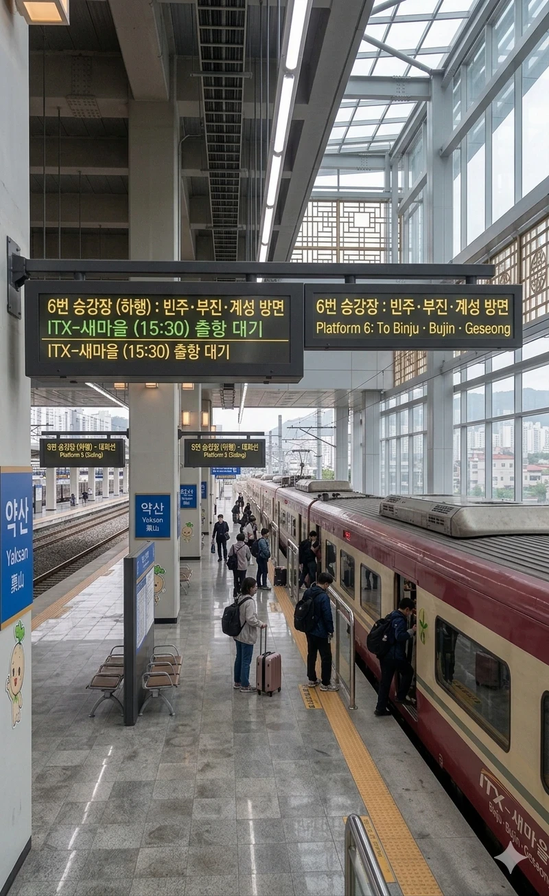

덕빈북도 약산시 보녕동 842에 위치한 철도역이다. 빈빈효선 광역전철 B23이다.
1924년 5월 30일 보통역으로 개업하여 약산시의 관문 역할을 톡톡히 하고 있다. 과거 일제강점기 시절에는 약산 지역의 풍부한 약재와 임산물을 수탈하기 위한 목적으로 노선이 부설되었다는 아픈 역사가 있으나, 광복 이후에는 지역 경제 발전을 견인하는 핵심 교통망으로 굳건히 자리 잡았다.
현재의 역사는 2017년 5월 2일 빈효선 광역전철 개통과 함께 완공된 거대한 신역사이다. 지상 3층 규모의 통유리벽과 철골이 어우러진 현대적인 양식을 띠고 있으며, 인구 30만의 중추 도시인 약산시의 규모에 걸맞게 무궁화호, ITX-새마을, ITX-마음 등 다양한 일반열차가 필수적으로 정차한다. 대합실 내부는 전통 창살 무늬를 모티브로 한 인테리어가 적용되어 '한방 도시 약산'의 정체성을 훌륭하게 녹여냈다는 호평을 받는다. 역 공기만 마셔도 건강해지는 기분이 든다카더라.
역 주변은 약산시의 구도심이자 상업의 중심지인 보녕동 노른자위에 위치하여 항상 유동인구가 많고 번화하다. 역 바로 앞에는 대형 마트인 이마트 약산점이 자리 잡고 있어 쇼핑객들의 발길이 끊이지 않으며, 길을 건너 도보로 5분만 걸어가면 전국 3대 약령시장 중 하나로 꼽히는 거대한 약산 약령시장이 펼쳐진다.
매년 10월 초, 역 광장과 약령시장 일대에서 '약산 한방바이오축제'가 대규모로 열린다. 이때는 평소보다 수 배에 달하는 엄청난 관광객과 상인들이 몰려들어 약산역 전체가 진한 한약재 향기와 인파로 가득 찬다. 또한 역에서 약 800m 떨어진 곳에 '약산시외버스터미널'이 있어 시외 교통과의 환승 연계성도 매우 훌륭한 편이다. 다만 환승통로가 있는 건 아니라서 짐이 많으면 800m 걷다가 쌍욕이 나올 수 있다.
인구 30만 명 규모의 중소도시임에도 불구하고, 구도심 상권과 약산 약령시장 관광 수요가 겹쳐 일반열차 이용객 비중이 상당히 높게 나타나는 것이 특징이다.[1]전국적으로 봐도 일반열차 수요가 탄탄하게 받쳐주는 알짜배기 역 중 하나로 꼽힌다.
| 연도 | 광역전철 승차량 | 일반열차 승차량 | 총 이용객 |
|---|---|---|---|
| 2020년 | 11,200명 | 6,300명 | 17,500명 |
| 2021년 | 11,500명 | 6,500명 | 18,000명 |
| 2022년 | 13,800명 | 7,900명 | 21,700명 |
| 2023년 | 14,218명 | 8,500명 | 22,718명 |
| 2024년 | 14,800명 | 9,150명 | 23,950명 |
전철은 2면 4선 상대식(중선 2선은 고속열차 및 화물열차 통과선)을 사용하며, 일반열차는 쌍섬식(3~6번)을 사용하여 총합 4면 8선의 웅장한 규모를 자랑한다. 승강장 다이어그램과 행선지 표는 아래와 같다.

| 영내 ↑ | |||||
1 |
ㅣ | ↓ 통과 |
↑ 통과 |
ㅣ | 2 |
| ↓ 홍하 | |||||
| 1번 | 빈빈효선 광역전철 | 효빈 · 효빈항 방면 | |||
| 2번 | 빈빈효선 광역전철 | 고남 방면 | |||

| 이자 · 고해 ↑ | ||
| ㅣ | 3 | 4 |
ㅣ |
| ↓ 화소 | ||
| 3번 | 일반열차상행 | 효빈 · 안천 방면 |
| 4번 | 일반열차상행 | 효빈 · 안천 방면 (대피선) |

| 화소 ↑ | ||
| ㅣ | 5 | 6 |
ㅣ |
| ↓ 빈주 | ||
| 5번 | 일반열차하행 | 빈주 · 부진 · 계성 방면 (대피선) |
| 6번 | 일반열차하행 | 빈주 · 부진 · 계성 방면 |
약산역은 약산시와 효빈시 전역을 잇는 중요한 교통 결절점이다. 역 앞 정류장에서는 아래의 다양한 노선들을 이용할 수 있다.
| 노선 번호 | 주요 경유지 |
|---|---|
| 5000 | 성가면 ↔ 약산역 ↔ 이자공원 ↔ 창전역 |
| 7000 | 치원군청 ↔ 약산역 ↔ 도향역 ↔ 안천역 |
| 9000 | 치원군청 ↔ 약산역 ↔ 도변역 ↔ 남구청역 |
| 8888 | 원강읍 ↔ 약산역 ↔ 탄성군청 ↔ 청엽구청 |
| 노선 번호 | 주요 경유지 | 비고 |
|---|---|---|
| 1000 | 약산터미널 ↔ 약산역 ↔ 홍하역 ↔ 치원읍 | 북부 산업축 |
| 3000 | 선곡읍 ↔ 수구역 ↔ 약산시청 ↔ 약산역 ↔ 장곡역 | 서남-동부 교육축 |
| 4000 | 약산터미널 ↔ 약산역 ↔ 화소역 ↔ 원강읍 ↔ 마현역 | 동부 환상선 |
| 노선 번호 | 주요 경유지 |
|---|---|
| 100 | 약산시청역 ↔ 약산역 ↔ 대염초교 ↔ 수구역 |
| 120 | 약산역(기점) ↔ 약산보건고 ↔ 고곡동 ↔ 하내장역 |
| 143 | 산형역 ↔ 탄미역 ↔ 약산시청역 ↔ 약산역 ↔ 홍하역 |
| 150 | 약산시청역 ↔ 약산역 ↔ 화소역 ↔ 요곡역 ↔ 염원동 |
원강, 화소, 장곡 방면으로 뻗어나가는 노선들이다.
| 노선 번호 | 주요 경유지 |
|---|---|
| 205 | 약산시청역 ↔ 약산역 ↔ 화소역 ↔ 원강읍 ↔ 초전리 |
| 215 | 약산역(기점) ↔ 보녕중 ↔ 목하리 ↔ 원강읍 ↔ 만세리 |
| 250 | 산형역 ↔ 탄미역 ↔ 역성동 ↔ 약산역 ↔ 원강읍 ↔ 대촌리 |
| 260 | 영내역 ↔ 산형역 ↔ 약산역 ↔ 원강삼거리 ↔ 화구리 |
| 270 | 약산역(기점) ↔ 화소고교 ↔ 원강삼거리 ↔ 장곡역 |
| 280 | 약산시청역 ↔ 약산역 ↔ 하내장 ↔ 화소역 ↔ 마현지구 ↔ 무기역 |
| 310 | 약산역(기점) ↔ 보녕중 ↔ 요곡역 ↔ 하내장역 ↔ 목하리 |
| 311 | 약산역(기점) ↔ 화소고교 ↔ 하내장역 ↔ 요곡역 ↔ 춘일리 |
| 340 | 산형역 ↔ 대염동 ↔ 약산역 ↔ 화소역 ↔ 서판리 |
| 355 | 영내역 ↔ 산형역 ↔ 약산역 ↔ 화소역 ↔ 목하리 |
치원군 방면, 성가면, 광정면 등 외곽으로 들어가는 노선들이다.
| 노선 번호 | 주요 경유지 |
|---|---|
| 400 | 약산시청역 ↔ 약산역 ↔ 홍하역 ↔ 니지리 ↔ 상곡리 |
| 402 | 약산역(기점) ↔ 북천동 ↔ 홍하역 ↔ 학전리 ↔ 지향리 |
| 403 | 약산역(기점) ↔ 염원동 ↔ 평야리 ↔ 송판리 |
| 425 | 약산시청역 ↔ 약산역 ↔ 홍하역 ↔ 선월리 ↔ 부도리 |
| 480 | 약산역(기점) ↔ 약령시장 ↔ 홍하역 ↔ 치원읍 (완행) |
| 481 | 약산역(기점) ↔ 요곡역 ↔ 홍하역 ↔ 치원 후등면 (완행) |
| 482 | 약산역(기점) ↔ 영내역 ↔ 홍하역 ↔ 치원 산전면 (완행) |
| 502 | 약산역(기점) ↔ 보녕중 ↔ 수구역 ↔ 예마리 ↔ 덕행리 |
| 521 | 약산역(기점) ↔ 보녕초 ↔ 화소고 ↔ 근강면사무소 ↔ 청묘리 |
| 580 | 홍하역 ↔ 염원동 ↔ 약산역 ↔ 수구역 ↔ 편야리 ↔ 성가면사무소 |
| 노선 번호 | 주요 경유지 |
|---|---|
| Y-4 | 영내역 ↔ 체신동 ↔ 약산1동주민센터 ↔ 약산역 |
| Y-9 | 약산역(기점) ↔ 보녕동구시가지 ↔ 보녕고교 ↔ 영내역 |